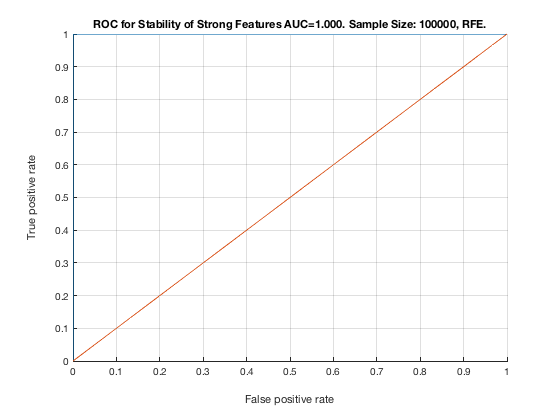

% TieNet_Reduced. Sample Size: 100000. RFE. unit_stability_type(100000, 2, "TieNet_Reduced")
Table 47. Stability by Type. Sample Size: 100000, RFE.
_______________________________________________________
SELECTED COUNTS: Strong:=5, Weak=26, Irrelevant=4
TOTAL COUNTS: Strong:=5, Weak=26, Irrelevant=4
Feature_Number Stability Type Path_Length N_MBS
______________ _________ ____________ ___________ _____
1 ' 1.000 ' ' STRONG ' 1 0
7 ' 1.000 ' ' STRONG ' 1 0
12 ' 1.000 ' ' STRONG ' 1 0
21 ' 1.000 ' ' STRONG ' 1 0
18 ' 0.754 ' ' STRONG ' 1 1
39 ' 0.468 ' ' weak ' 4 1
41 ' 0.448 ' ' weak ' 3 1
28 ' 0.440 ' ' weak ' 5 1
40 ' 0.390 ' ' weak ' 3 1
26 ' 0.272 ' ' weak ' 5 1
27 ' 0.250 ' ' weak ' 6 1
25 ' 0.208 ' ' weak ' 6 1
45 ' 0.182 ' ' weak ' 7 1
52 ' 0.180 ' ' weak ' 4 1
53 ' 0.166 ' ' weak ' 5 1
48 ' 0.164 ' ' weak ' 6 1
32 ' 0.112 ' ' weak ' 8 1
50 ' 0.108 ' ' weak ' 5 1
47 ' 0.088 ' 'irrelevant' Inf 1
44 ' 0.086 ' 'irrelevant' Inf 1
35 ' 0.084 ' ' weak ' 7 1
31 ' 0.068 ' ' weak ' 9 1
38 ' 0.064 ' ' weak ' 5 1
51 ' 0.062 ' ' weak ' 4 1
30 ' 0.056 ' ' weak ' 10 1
49 ' 0.052 ' ' weak ' 6 1
33 ' 0.050 ' ' weak ' 8 1
46 ' 0.050 ' ' weak ' 7 1
36 ' 0.042 ' ' weak ' 8 1
42 ' 0.038 ' 'irrelevant' Inf 1
29 ' 0.036 ' ' weak ' 11 1
34 ' 0.036 ' ' weak ' 8 1
43 ' 0.036 ' 'irrelevant' Inf 1
37 ' 0.034 ' ' weak ' 6 1
24 ' 0.030 ' ' weak ' 4 1
Figure 47. ROC for Stability of Strong Features AUC=1.000. Sample Size: 100000, RFE.
_____________________________________________________________________________________
